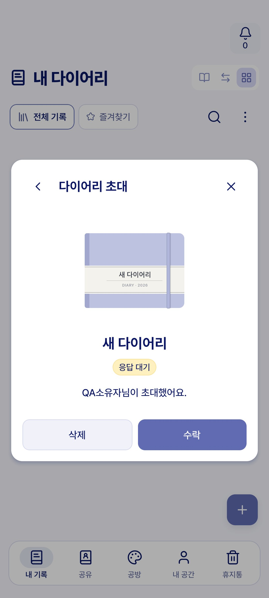
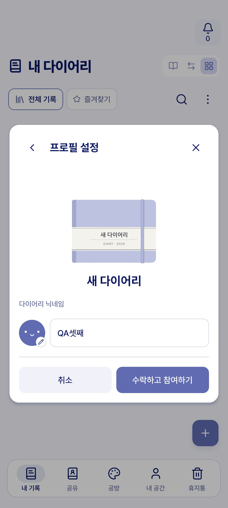
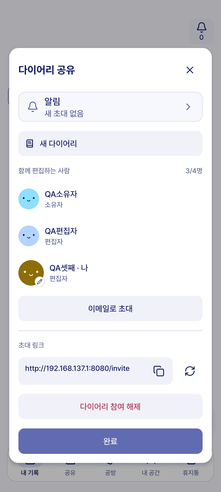

폰과 태블릿에서 게스트·회원·공유 흐름을 실제로 돌며 찾은 문제를 치명 → 규격 → 경험 → 미감 → 통일성 → PM 관점 순서로 모았다. 지난 QA 사전 점검에 없던 미감과 사용자 경험을 이번에 특히 많이 봤다. 수정은 하나도 하지 않았다.
| 항목 | 내용 |
|---|---|
| 코드 기준 | origin/develop a1407675 (워크트리 C:/dqa) |
| 폰 | 갤럭시 S20 (Android 13, 1080×2400, 411×914dp), 개발 앱 com.f106.DIO.handwritingdev + Metro 8120. Play 앱은 건드리지 않음 |
| 태블릿 | 갤럭시 탭 S9 FE (Android 16), 글꼴 지연 로딩 세션의 com.f106.DIO.fonttest 앱(같은 커밋 + 글꼴 작업 미커밋 변경 포함), 재설치 없이 사용 |
| 백엔드 | 로컬 C:/dio-local 8080 (develop과 backend/ 차이 없음) |
| 계정 | 게스트, 그리고 로컬 시드로 만든 qa1~qa5@dio-local.test(로컬 DB 전용) |
| 근거 표시 | [실기] 실기기에서 재현, [코드] 코드만 확인, [미확인] 재현 못 함 |
심각도: P0 출시 차단(심사 거절 · 데이터 대량 손실 · 핵심 사용 불가) / P1 핵심 흐름이 끊기거나 작업 소실 / P2 불편 · 규격 미달 / P3 사소.
집계: P0 3 · P1 14 · P2 · P3 약 40(묶어 적은 항목 포함). 화면별 진행표는 01 화면 목록.
아직 보지 못한 것 (1 · 2차 합산, 2차 결과는 §12)
PUSH_HTTPS_REQUIRED로 등록을 멈춘다. HTTPS 서버에서 확인해야 한다.| # | 심각도 | 한 줄 | 근거 |
|---|---|---|---|
| F-01 | P0 | 공유 다이어리인데 신고 · 차단 기능이 없음 (App Store 1.2, Play UGC 정책) | 코드 |
| F-02 | P0 | 앱을 다시 켜면 로그아웃, 안내 없이 게스트 보관함으로 (회원 다이어리가 안 보임) | 실기 |
| F-03 | P0 | 오픈소스 고지 목록이 현재 의존성과 어긋나 Android 빌드 검사가 실패 | 실기 |
| F-04 | P1 | 초대를 수락해도 다이어리가 열리지 않고 빈 내 다이어리로 돌아옴 | 실기 |
| F-05 | P1 | 편집 중 참여자에서 제외돼도 안내 없음, 계속 그려지고 개발자 코드만 노출 | 실기 |
| F-06 | P1 | 스티커 시트 분리 결과가 뒤로가기 한 번에 사라짐 (확인 없음) | 실기 |
| F-07 | P1 | 같은 다이어리의 표지가 사람마다 다름, 꾸민 표지는 서버에 저장되지 않음 | 실기 |
| F-08 | P1 | 가입하면 기능이 줄어듦: 회원 새 다이어리에 속지 탭 없음 |
실기 |
| F-09 | P1 | 글 입력 뒤 화면이 밀린 채 남아 페이지가 잘리고, 새 요소가 잘린 위치에 놓임 | 실기 |
| F-10 | P1 | 로그인 뒤 하던 일로 돌아오지 않음, 게이트 시점도 기능마다 다름 | 실기 |
| F-11 | P1 | 기기 저장값이 계정을 넘나듦: 다른 계정의 스티커 폴더가 보임 | 실기 |
| F-12 | P1 | "사진 속 대상 오리기" 저장이 실제로 저장되지 않음 | 코드 |
| F-13 | P1 | 분석 · 크래시 수집이 없음: 출시 후 전환과 오류를 볼 수 없음 | 코드 |
| F-14 | P1 | fresh 설치로는 Android 개발 빌드가 안 됨 (Firebase 패키지 · pnpm 설정 · 경로 길이) | 실기 |
| F-15 | P1 | 태블릿 편집기에 패널 둘이 기본으로 열려 세로에서 페이지가 폭의 절반 | 실기 |
| F-36 | P1 | 세션이 만료되면 벗어날 길이 안 보임: 프로필은 로그인 상태인데 목록은 다시 로그인해 주세요, 로그인 버튼 없음 |
실기 |
| F-37 | P1 | 서버가 끊겨도 다시 로그인해 주세요: 네트워크 문제를 로그인 문제로 안내 |
실기 |
지난 점검 이후 고쳐진 것 (이번에 확인) — 페이지 단건 삭제 확인창 [실기], 시스템 글자 확대 대응 대부분 [실기], 로그인 오버레이 뒤로가기 [코드], 오류 복구 화면 [코드], 태블릿 세로 방향 대응 [실기], 알림함 디자인 [실기], 손가락 그리기(지난번 "확인 필요") [실기].
아직 남은 것 — 재실행 시 게스트(F-02로 격상), 아이디 찾기 막다른 길, 새 다이어리 속지 색 칩 잘림, 폰 도구 줄 잘림, 레이어 이름 텍스트/텍스트, 안내 멘트 일부.
내보내기만 있고 신고 · 차단 문구가 없다.신고 · 차단, 페이지 · 요소에 신고를 두고 처리 연락처와 운영 절차를 정한다. 백엔드 API가 필요하니 함께 설계한다.src/auth/authApi.js:11-12(토큰 메모리 보관), App.js:102-110(startGuest). 지난 보고서에서는 P1이었는데, 회원 기능이 늘어 영향이 커져 올렸다.expo-secure-store에 두고 시작 때 조용히 갱신한다. 실패하면 게스트로 떨어뜨리지 말고 "다시 로그인해 주세요"를 한 번 알린다. 토큰은 1회용 교체(RFC 9700) + 갱신 요청 직렬화. Android 자동 백업에서 제외한다.src/licenses/generated/android.json이 11-02 이후 갱신되지 않아 pnpm-lock.yaml 해시와 다르다. scripts/verify-prepared-licenses.cjs android가 License catalog is stale로 실패하고, 이 검사는 preBuild에 걸려 있다. 11-03 · 11-04에 lock이 바뀌었다(펜, 구글 · 애플 로그인).저장 안 됨만 뜬다. 눌러야 이 페이지를 편집할 권한을 확인하지 못했어요. (403 / DIARY_ACCESS_DENIED) 기기 작업은 유지돼요.가 나온다. 상단 참여자 수도 그대로다.src/editor/hooks/useMemberCanvasCollaboration.js:33-35, App.js:373-380(공유 목록 소실 이동은 서버 런타임에서 동작하지 않음).이 다이어리에 더 이상 참여하지 않아요 + 내 다이어리로, 가능하면 내 사본으로 저장. 오류 문구는 "무슨 일 · 원인 · 다음 행동" 구조로 쓰고 코드는 로그로만 남긴다(NN/g, Adobe Spectrum). 권한 박탈 전용 공식 지침은 찾지 못해 일반 원칙에서 끌어낸 권고다.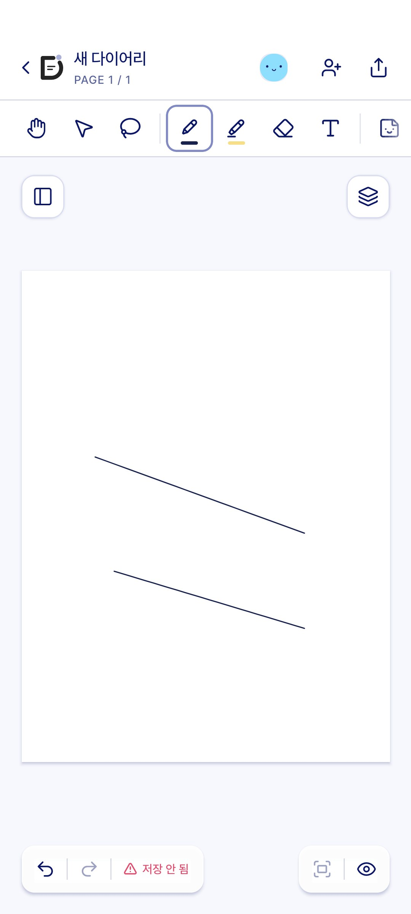
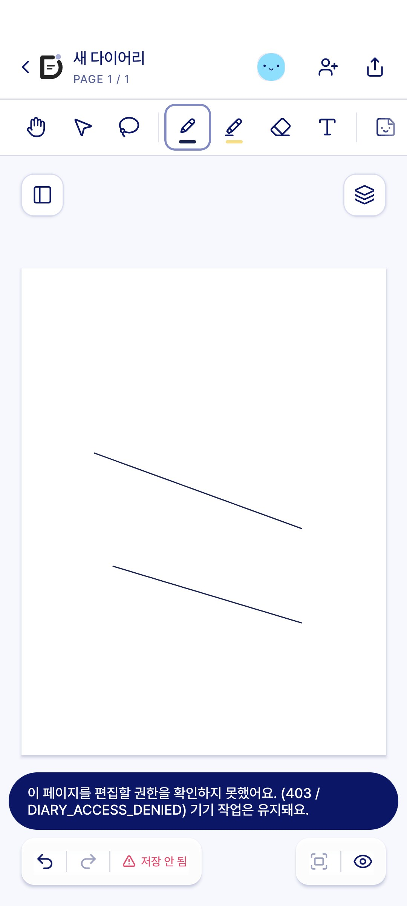
panels/StickerSplitModal.js:289 onRequestClose.저장하지 않고 나갈까요?. 앱의 다른 작업 화면(새 다이어리 · 프로필)과 같은 ConfirmDialog로 맞춘다.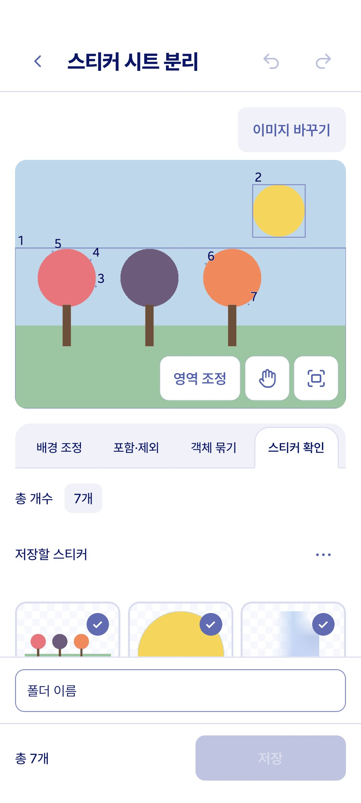
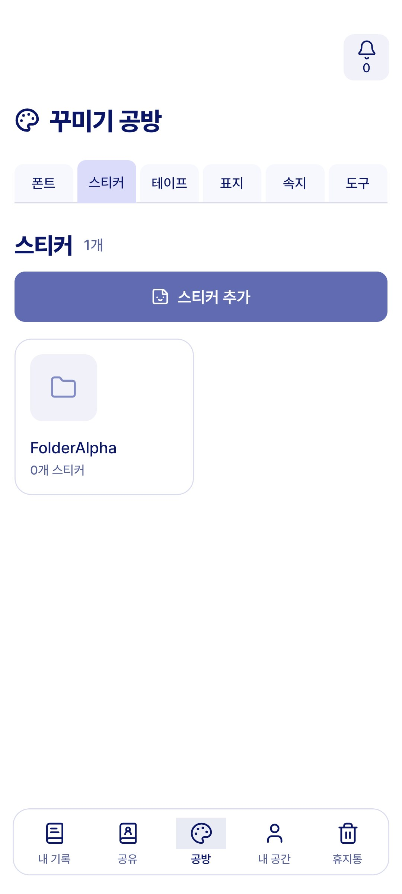
옮기지 못한 항목 · 표지 꾸밈 2개로 표지가 바뀐다.coverColor, coverStyle: "PLAIN"뿐이다.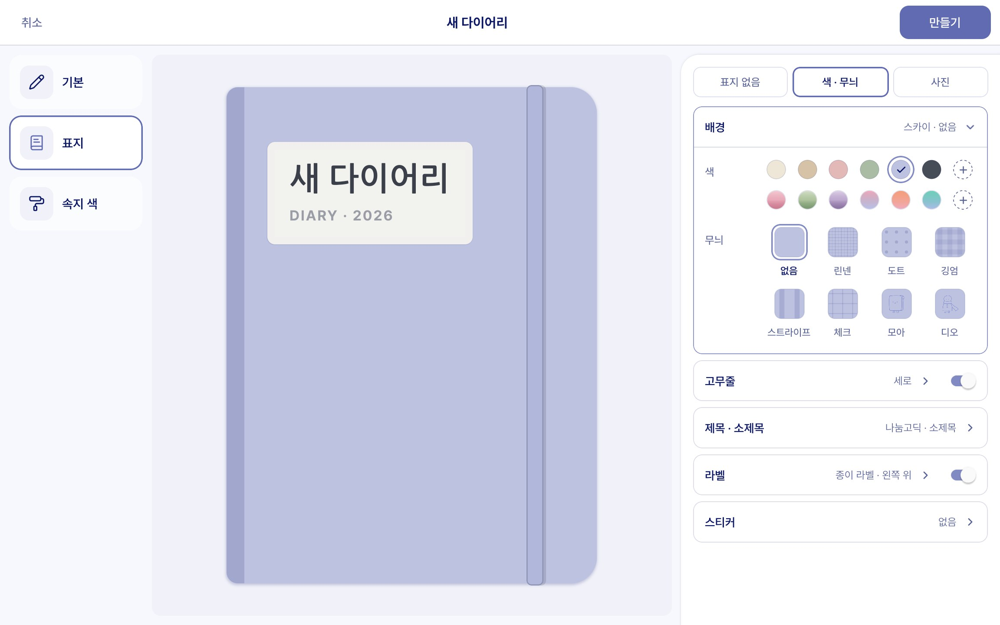
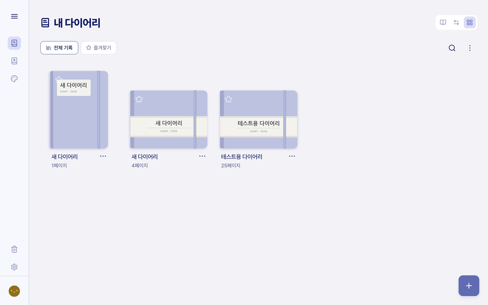
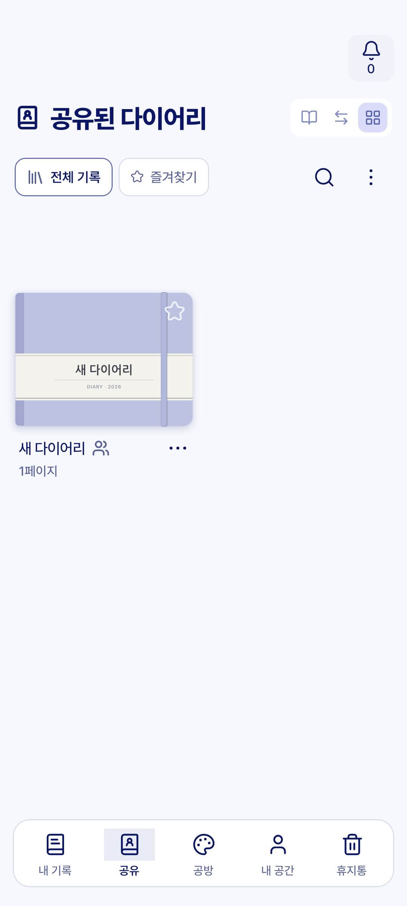
화면에 맞춤을 눌러야 돌아온다.EditorScreen.js:181의 keyboardDidHide가 keyboardTop만 지운다.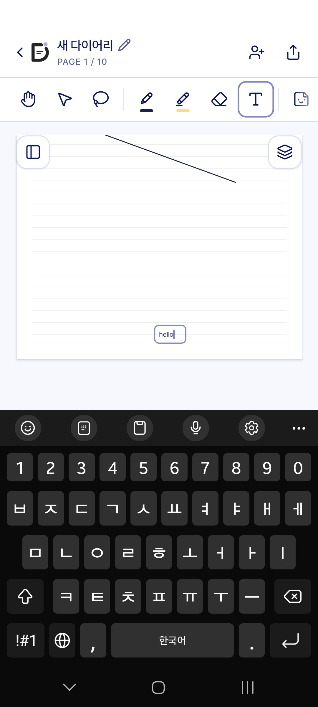
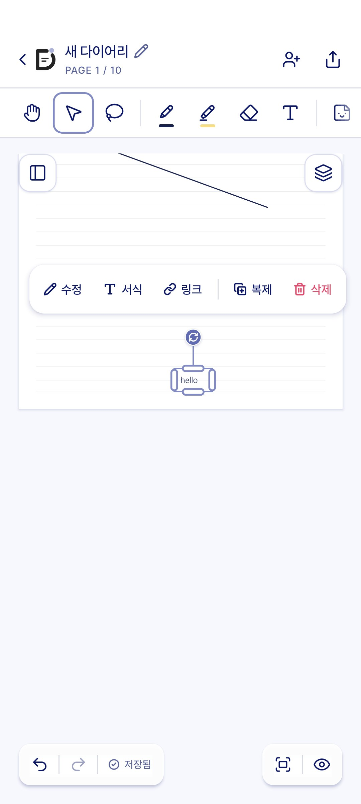
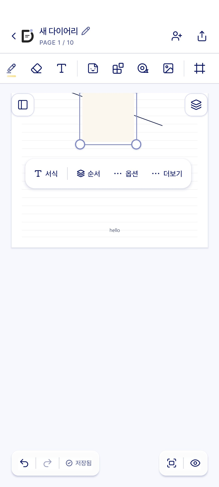
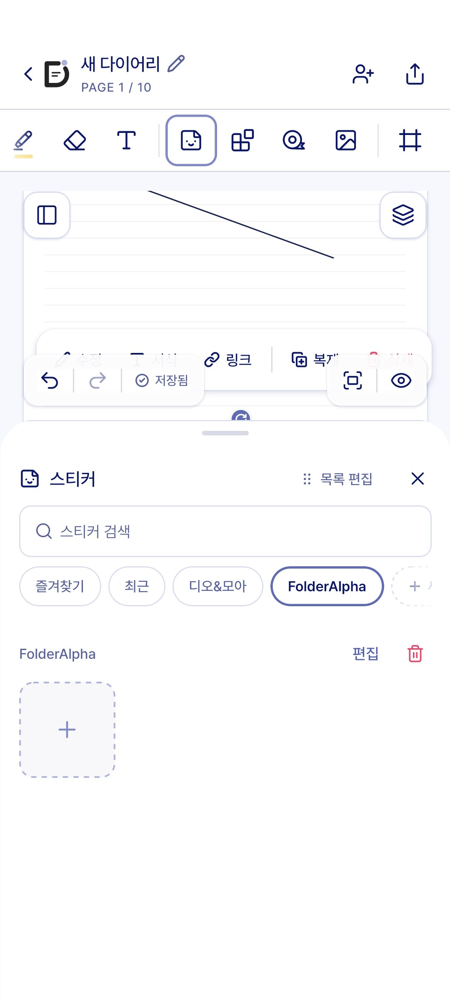
FolderAlpha가 다른 회원으로 로그인해도 보인다(공방 · 편집기). 팔레트 · 최근 색 · 테이프 폴더도 같은 구조로 보인다 [코드 추정].editor/hooks/useCustomDecor.js:21,73 등 STORAGE_KEYS가 계정 구분 없음(앱 잠금 · 최근 검색어는 계정별).StickerCutoutModal.js:243,247: 확인창이 미리보기 단계라 실제로는 저장되지 않아요.라고 말한다. 공방 메뉴에는 정식 기능처럼 있다. 출시 전 숨기거나 완성한다.| 원인 | 현상 | 해법 |
|---|---|---|
google-services.json에 .handwritingdev 없음 |
No matching client found |
Firebase에 개발 패키지 등록 |
pnpm 11이 .npmrc의 node-linker=hoisted를 무시 (Unknown project config) |
깊은 경로 + 260자 초과 → ninja: manifest still dirty after 100 tries |
pnpm-workspace.yaml의 nodeLinker: hoisted로 이동 |
플러그인 임시 폴더 ~/.dio-cxx/<해시>가 김 |
ninja: mkdir ... No such file |
더 짧은 경로(팀원 빌드는 C:/x로 직접 수정 중)를 플러그인 기본값으로 |
| # | 심각도 | 근거 | 내용 | 해법 |
|---|---|---|---|---|
| F-16 | P2 | 실기 | 시스템 글자 크기를 바꾸면 앱이 재시작되어 편집기에서 보관함으로 튕김 (configChanges에 fontScale 없음) |
fontScale 추가 + 재계산, 또는 상태 복원 |
| F-17 | P2 | 실기 | 글자 1.5배에서 표지에 인쇄된 제목까지 커져 새 / 다이어리로 줄바꿈 |
표지 · 속지 · 캔버스 글자는 allowFontScaling={false}, UI만 확대 |
| F-18 | P2 | 실기 | 라이트 앱에 검은 키보드와 시스템 바 (키보드 뜰 때 하단 바 재등장) | 몰입 정책 정리, iOS는 keyboardAppearance="light" |
| F-19 | P2 | 실기 | 편집기 떠 있는 막대 · 폰 하단 탭 · 가로 도구 레일의 접근성 영역이 0×0으로 잡힘, 로그인 오버레이 뒤 보관함도 접근성 트리에 남음 | TalkBack으로 확인 후 accessibilityViewIsModal · importantForAccessibility 적용. 도구로 본 값이라 실제 영향은 [미확인] |
| F-20 | P2 | 코드 | 알림 권한을 로그인 직후 자동 요청 (지난 보고서와 동일) | 초대 수락 · 종 버튼 맥락에서 요청 |
| F-21 | P2 | 실기 | 폰(S펜 없음)에도 그리기 입력: 펜만과 필압 · 기울기 토글이 보임. 고르면 손가락으로 못 그릴 수 있음 [선택 후 동작은 미확인] |
펜 입력을 본 기기에서만 노출 또는 확인 문구 |
| F-22 | P3 | 실기 | 폰 사진 선택이 여러 장 모드라 1장이어도 완료를 한 번 더 눌러야 함(스티커 분리 등) |
1장 기능은 단일 선택 |
| F-23 | P2 | 조사 | Play 계정 삭제 정책은 인앱 + 웹 삭제 요청 링크 둘 다 요구. 인앱은 있음, 웹 링크는 앱에서 못 찾음 | 웹 경로 준비, Data safety에 기재 |
| F-24 | 참고 | 조사 | targetSdk 36 마감은 지난 보고서와 같음. 지난 보고서의 "API 37 2027-08"은 현행 Play 문서에서 확인 안 됨 → 추정으로 낮춘다. Apple은 2026-04-28부터 26 SDK 빌드 필수 | 일정표 수정 |
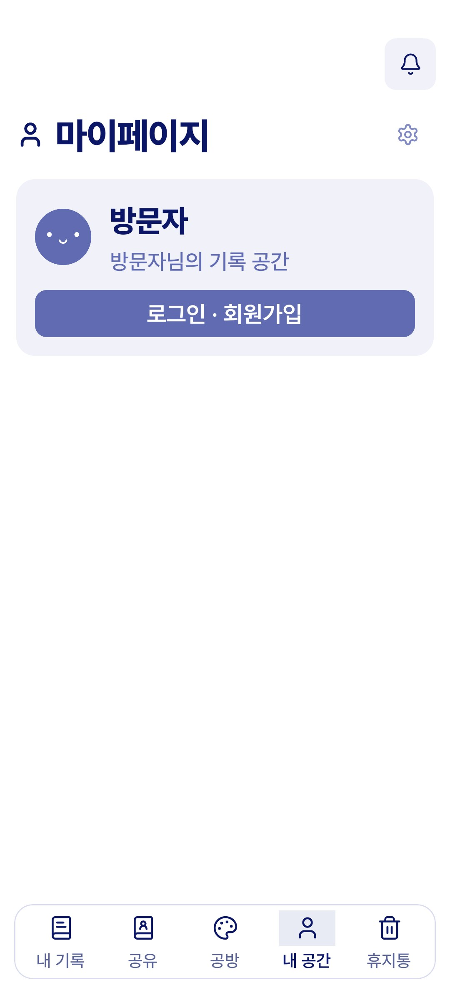
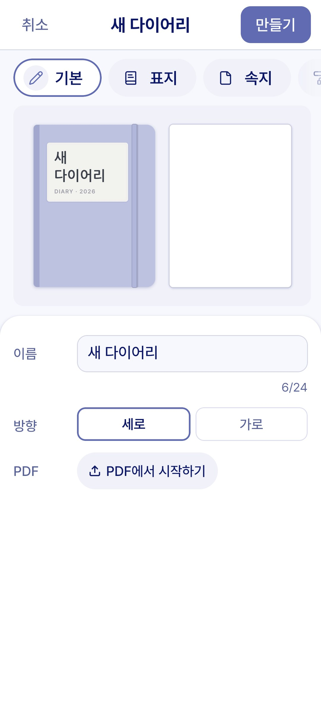
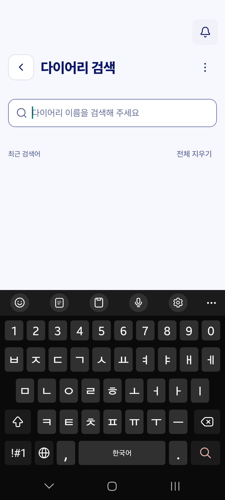
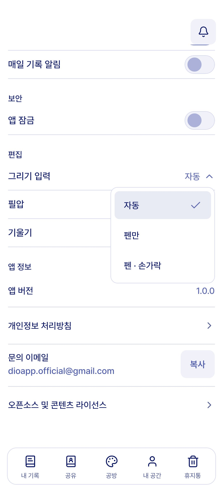
DIO의 핵심 가치는 함께 꾸미는 것인데, 혼자 쓰다가 함께 쓰기로 넘어가는 길목마다 흐름이 끊긴다.
수락하고 참여하기 → 공유 창 → 완료 → 빈 내 다이어리. 초대받은 다이어리는 공유 탭에서 직접 찾아야 한다. 가이드는 "그 다이어리를 바로 연다"고 적었다.SharingHub.js:730(canOpenDiary), sharingApi.js:188(서버 런타임이 항상 false).○○에 참여했어요 토스트만 띄운다. 도안 6.삭제만 있다(가이드는 거절 · 수락, OO님이 초대했어요 문장도 없앤다고 함).알림 · 새 초대 없음 줄이 늘 있다(가이드는 "두지 않는다").


| 진입 | 게이트 시점 | 로그인 뒤 |
|---|---|---|
| 편집기 공유 | 누르면 바로 | 내 다이어리 (편집 중이던 다이어리는 안 보임) |
| 폰트 추가 | 누르면 바로 | 내 다이어리 |
| 스티커 추가 | 메뉴를 고른 뒤 | 미확인 |
| 테이프 · 표지 추가 | 게이트 없음 | - |
사진 패널 최근 추가한 사진 |
비활성 + 설명문 | - |
| 종 | 누르면 바로, 문구 "받은 초대는 …" | 내 다이어리 |
회원가입하고 로그인한 사용자만 쓸 수 있어요는 벽처럼 읽히니 로그인하면 친구와 함께 꾸밀 수 있어요처럼 얻는 것을 말한다.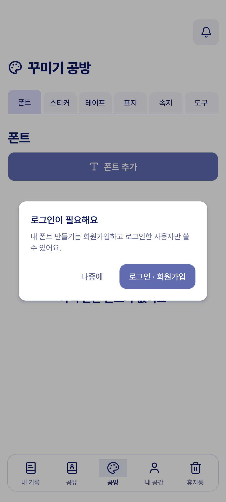
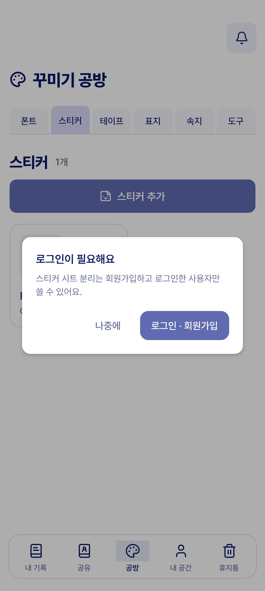
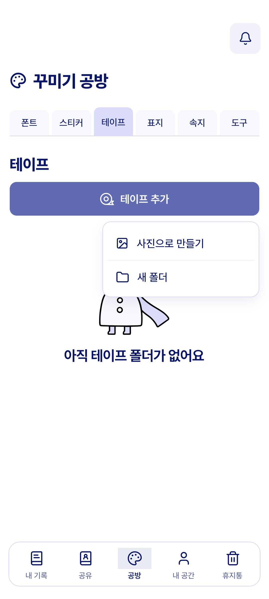
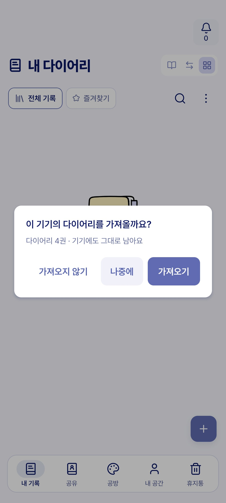
기본 · 표지 · 속지 · 속지 색, 회원은 속지가 없다. 표지 꾸밈 저장(F-07)까지 합쳐 가입할수록 손해인 구조다. 회원은 게스트의 상위 집합이어야 한다.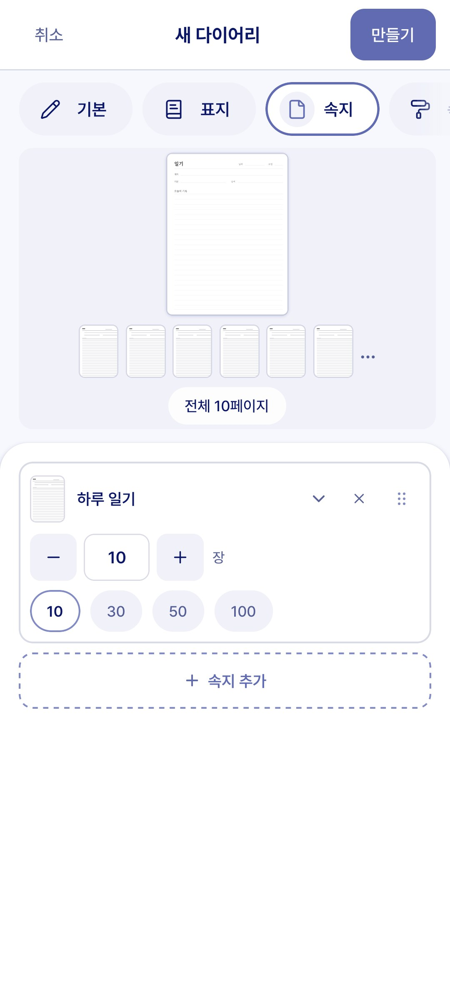
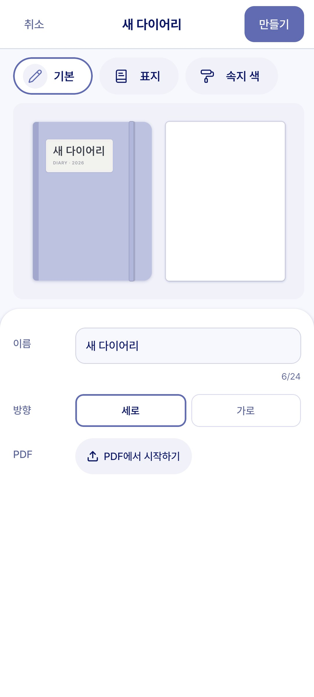
가져오지 않기 · 나중에 · 가져오기 셋이다. 나중에를 고르면 다시 가져올 입구를 앱에서 찾지 못했다(다음 로그인 때 다시 묻는다는 코드 근거만 있음). 두 개로 줄이고 설정에 입구를 둔다.옮기지 못한 항목이 끝난 뒤에야 나온다. 묻는 단계에 미리 보여 준다.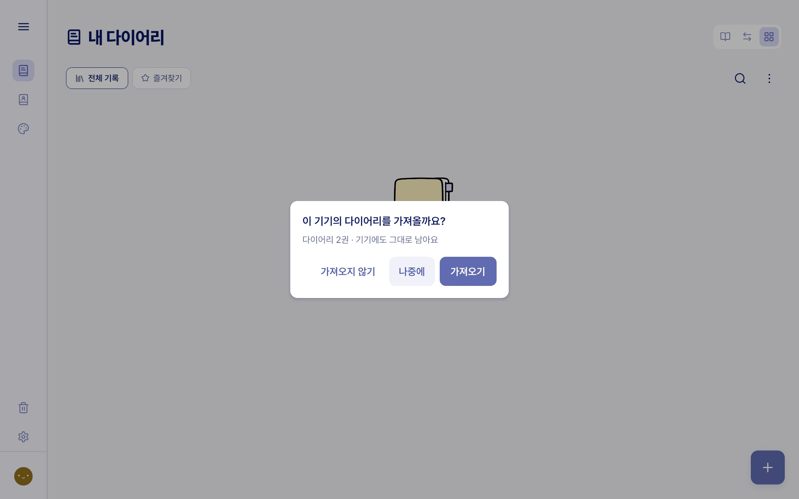
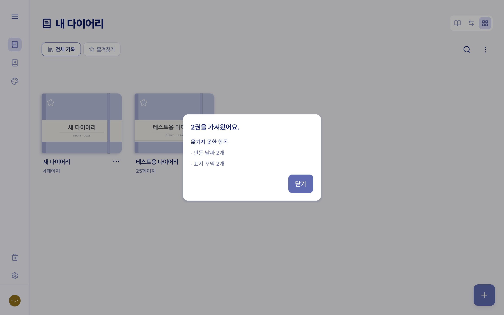
공유된 다이어리가 없어요, 휴지통이 비어 있어요, 회원의 내 다이어리가 없어요는 문구뿐이다. 특히 공유 탭은 어떻게 공유를 시작하는지 앱 어디에도 단서가 없다. NN/g 기준은 "상태 + 학습 단서 + 핵심 작업으로 가는 직접 경로"다. 안내 멘트 금지 규칙에 맞춰 설명 대신 버튼만 둔다(내 다이어리 공유하기). 도안 3.+ → 작업대 → 만들기 → 빈 페이지다. 서비스 소개의 "하루 한 장의 사진"으로 곧장 가는 길이 없다. 만들기 직후 빈 페이지에 사진 넣기를 눈에 띄게 두는 것을 검토한다. [첫 실행 데이터 삭제 재현은 다음 차수]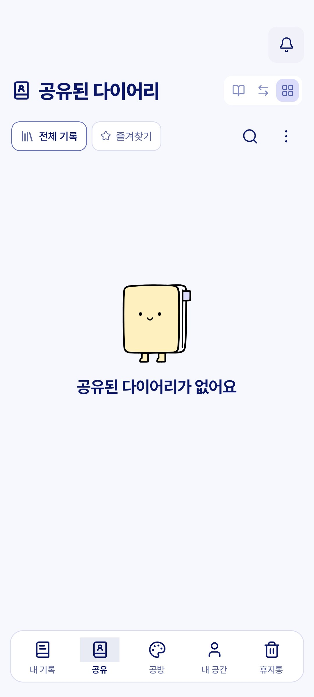
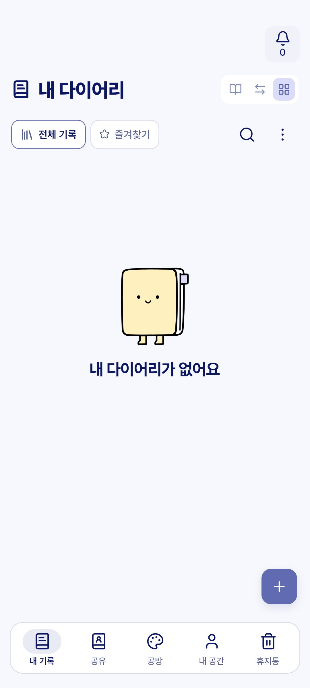
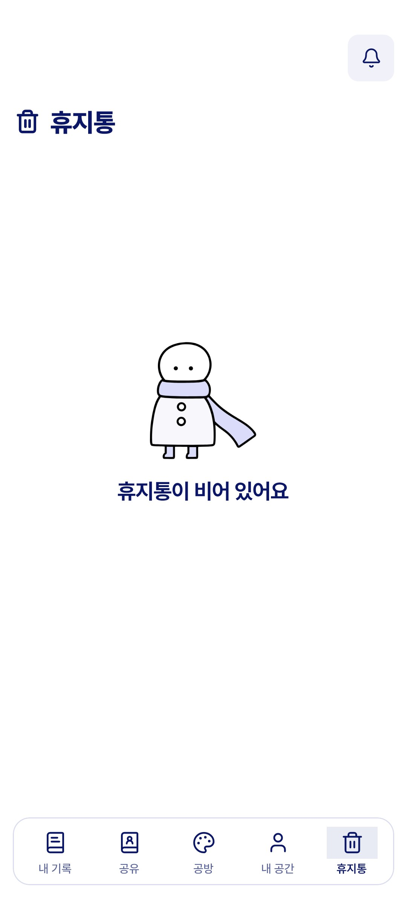
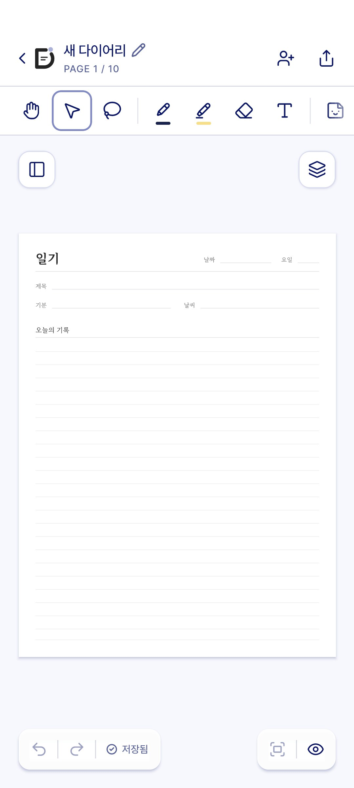
| # | 심각도 | 근거 | 내용 | 해법 |
|---|---|---|---|---|
| F-25 | P2 | 실기 | 뒤로가기 계층이 어긋남. 더보기 메뉴에서 누르면 메뉴만이 아니라 선택까지 풀리고, 읽기 모드에서 누르면 편집기가 아니라 보관함까지 나감 | "메뉴 → 선택 → 나가기" 한 단계씩. 읽기 모드는 들어온 곳으로. 지난 보고서의 단일 뒤로 스택과 함께 |
| F-26 | P2 | 실기 | 옵션과 더보기가 같은 ⋯ 아이콘 |
옵션은 조절 아이콘(sliders)으로 |
| F-27 | P2 | 실기 | 폰 세로에서 옵션만 떠 있는 패널(나머지는 하단 시트). 고른 요소를 가림 | 폰 세로는 하단 시트로 통일 (폰 패널 결정과 일치) |
| F-28 | P2 | 실기 | 시트 높이가 도구마다 달라 페이지가 들쭉날쭉 가려짐, 되돌리기 막대가 페이지 위에 뜸 | 높이 2단계 고정 + 막대를 시트에 붙임. 도안 5 |
| F-29 | P2 | 실기 | 폰 도구 줄 12개 가로 스크롤, 끝 아이콘 잘림 | 페이드 또는 7칸 + 더보기 — 구성 변경이라 결정 필요(§9) |
| F-30 | P2 | 실기 | 기본 글자가 페이지에 비해 매우 작아 손잡이가 글자보다 큼 | 기본 크기 상향은 코덱스 값 참고, 터치 영역은 hitSlop으로 유지 |
| F-31 | P2 | 실기 | 더보기 메뉴의 삭제가 잘린 채 스크롤 |
메뉴 높이를 내용에 맞춤 |
| F-32 | P3 | 실기 | 레이어 이름 텍스트 / 텍스트, 위젯 메모가 종류 도형 |
이름은 글 앞부분, 종류는 위젯 |
| F-33 | P2 | 실기 | 가로 폰: 레이어 패널이 페이지 왼쪽을 덮음, 패널 열면 되돌리기 막대가 위로 점프 | 패널 폭만큼 페이지 이동, 막대 위치 고정 |
| F-34 | P3 | 실기 | 회전하면 도구 줄 스크롤이 처음으로 돌아감 | 선택 도구가 보이게 복원 |
| F-15 | P1 | 실기 | 태블릿: 페이지 목록 + 레이어가 기본으로 함께 열림. 세로는 페이지가 폭의 절반, 레이어가 비어 있어도 폭 30%. 가이드는 "한쪽만" | 처음엔 닫음, 빈 레이어 자동 열기 금지 |
| F-35 | P3 | 실기 | 태블릿 패널의 칩 줄이 끝에서 잘리는데 단서 없음(사진 틀 안 보임) |
페이드 부품 재사용 |
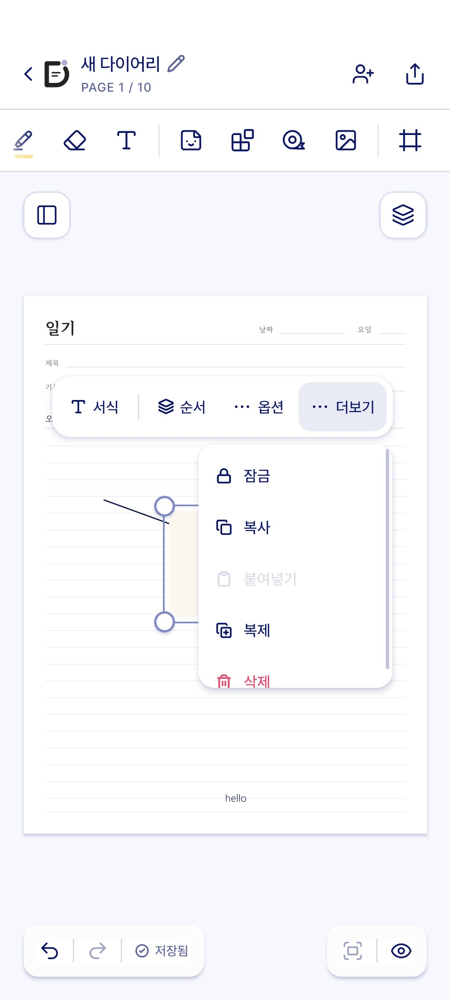
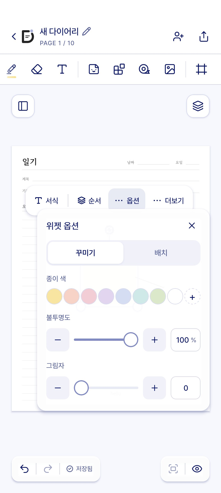
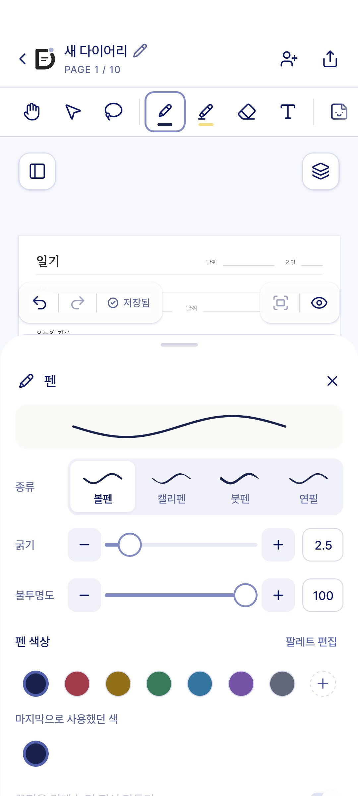
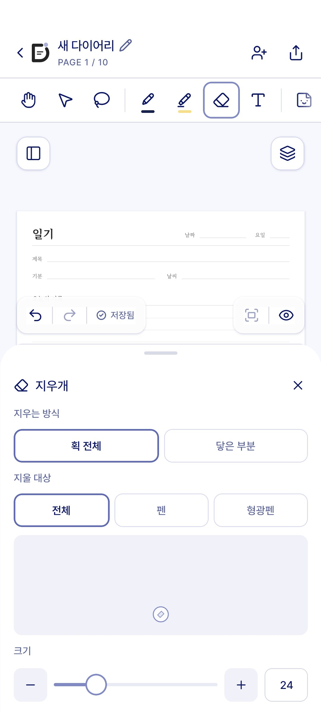
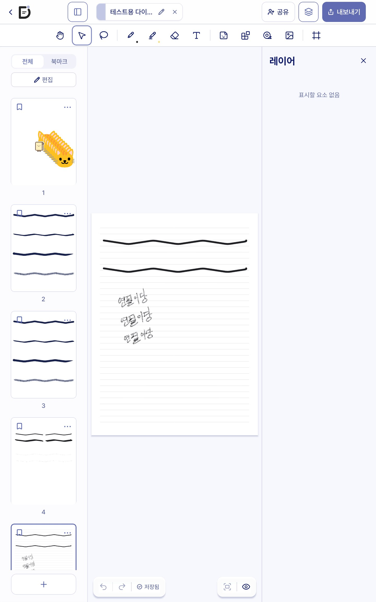
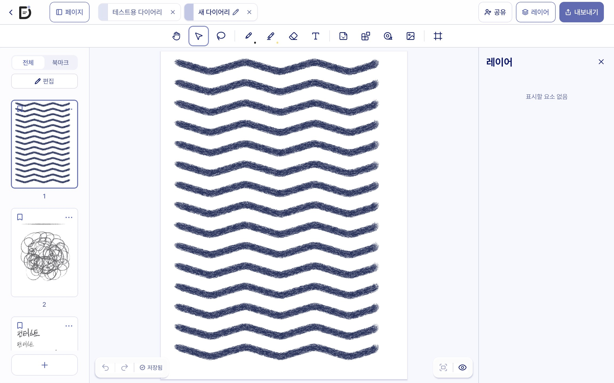
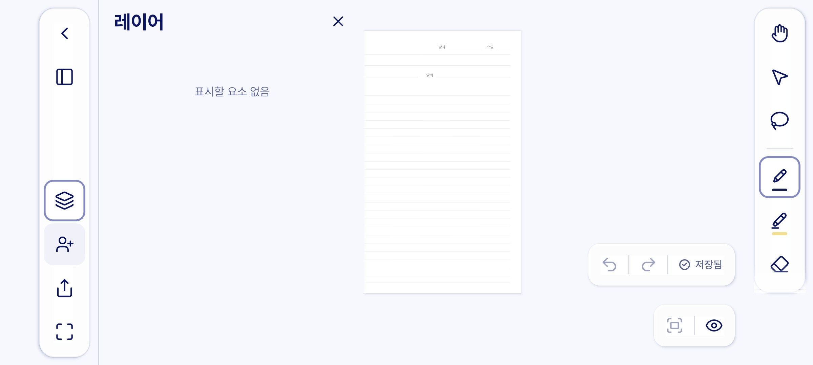
알림 설정 화면(서비스 · 마케팅, 저장 버튼). 어느 쪽이 진짜인지 알 수 없다. 한 화면으로 합치고 토글은 즉시 저장한다.내 공간 / 제목 마이페이지 이름이 다르다. 게스트 마이페이지는 카드 아래가 전부 비어 있다.아이디 찾기는 여전히 막다른 길이다.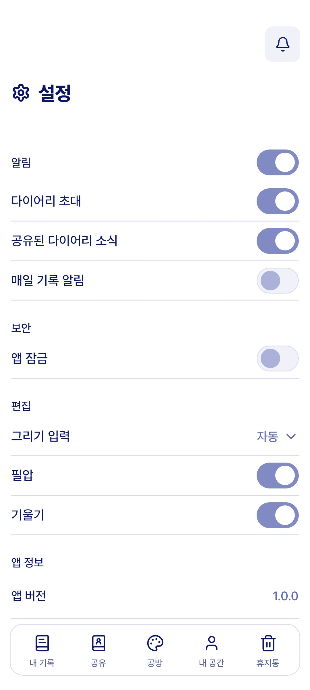
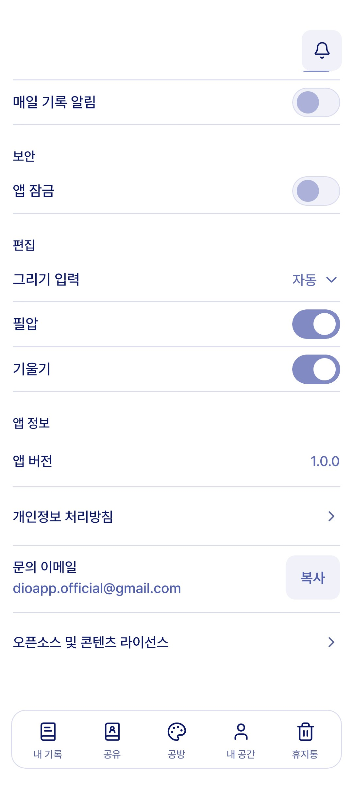
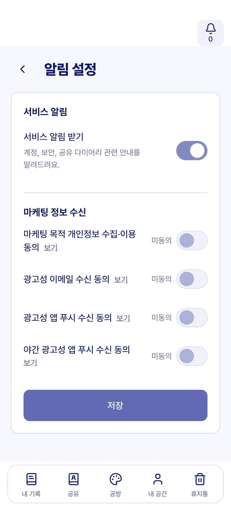
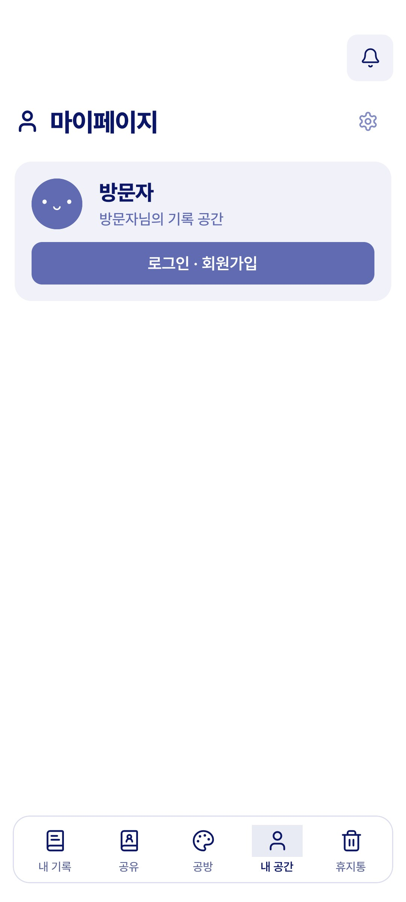
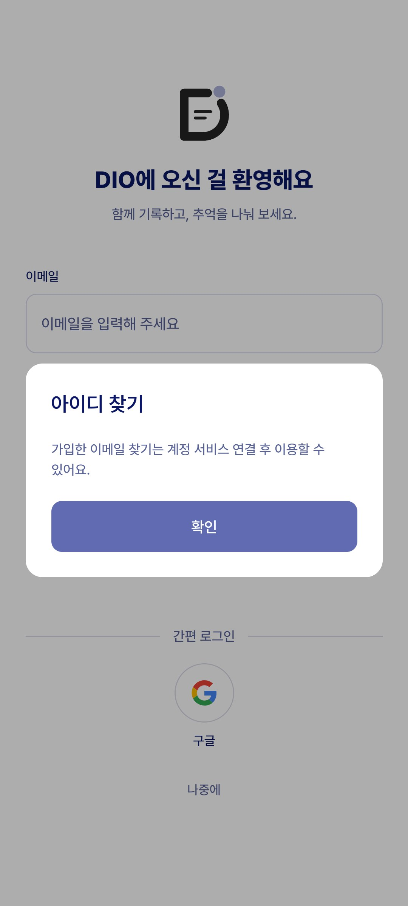
진단과 도안은 코덱스가 맡았다(미감 판단은 코덱스, 프로젝트 합의). 원문은 리서치/코덱스 미감 진단. 아래 채택 칸은 사용자 결정 · 가이드 · 기술 제약과 대조한 클로드의 대조 결과이고 미감 판단을 바꾼 것이 아니다.
코덱스가 본 전체 인상
Top 15 요약과 대조 결과
| # | 위치 | 문제 | 코덱스 값 | 대조 |
|---|---|---|---|---|
| 1 | 보관함 위 | 종 줄이 크롬을 먼저 보이게 함, 0 노출 |
헤더 72dp 안에 종, 0이면 배지 숨김 | 채택. 0 숨김은 바로 고칠 버그 |
| 2 | 스와이프 · 펼쳐서 | 옆 표지가 안 보임, 첫 면이 빈 페이지 | 카드 320dp + 다음 44dp, 첫 면은 표지 | 채택. 폰 스와이프는 인벤토리상 "옆 카드 보임"이 의도인데 실기에서 안 보임 → 버그 여부 확인 |
| 3 | 카드 | 별 · 정보 결속 약함 | 별 표지 우상단 | 부분. 별은 표지 위 유지, 위치는 가이드(왼쪽 위 12)를 따른다. 펼쳐서 보기의 별이 표지 밖인 것은 통일 |
| 4 | 빈 보관함 | 행동이 안 이어짐 | 문구 아래 48dp 보조 버튼 | 채택. + 아이콘만 결정은 FAB 한정이라 충돌 없음, 사용자 확인 |
| 5 | 공유 빈 상태 | 다음 행동 없음, 도구 과밀 | 필터 숨김 + 안내 문구 + 버튼 | 문구 기각(안내 멘트 금지), 필터 숨김 · 버튼 채택 |
| 6 | 공방 | 탭명과 대제목 반복 | 대제목 제거 | 채택. 개수 표시는 유지 필요 |
| 7 | 공방 | 본문이 75%에서 끊김 | 좌우 16 전폭, 탭 스크롤 | 전폭 채택, 탭 스크롤은 견출지 결정과 충돌 → 보류 |
| 8 | 공방 버튼 | 추가 버튼이 화면을 지배 | 52dp 행 또는 + | 검토. 폰 전폭은 가이드 규칙이라 사용자 결정 필요 |
| 9 | 게스트 내 공간 | 아래가 비어 있음 | 미리보기 2행 | 이름 통일 채택, 미리보기는 새 기능이라 보류 |
| 10 | 설정 | 뒤로 없음, 토글 몰림 | 뒤로 44, 행 56, 세부 분리 | 채택 |
| 11 | 도구 줄 | 12개 + 잘림 | 7칸 + 더보기 | 결정 필요(§9). 값은 lavender100 토큰으로 대체 |
| 12 | 시트 · 되돌리기 | 페이지가 흔들림 | 기본 344 · 확장 472, 막대 부착 | 채택 후 실측. 슬라이드 예외(폰 시트) 안 |
| 13 | 선택 메뉴 | 옵션 · 더보기 같은 아이콘, 손잡이 큼 | 옵션 삭제, 손잡이 16, 글자 18 | 아이콘 구분 · 글자 채택. 옵션 기능은 유지, 손잡이는 터치 44 hitSlop 유지 |
| 14 | 편집기 가로 | 레일 페이드가 사각으로 튐 | 페이드 제거 | 튀는 모서리만 고침 — 페이드는 공통 부품 결정이라 유지 |
| 15 | 공유 후 | 성공 경험 끊김 | 즉시 진입, 거절, 같은 자산 | 채택(F-04 · F-07) |
도안 6장 — 방향을 보는 그림이고 실제 값은 위 표를 따른다.


현재 화면 (도안과 비교)
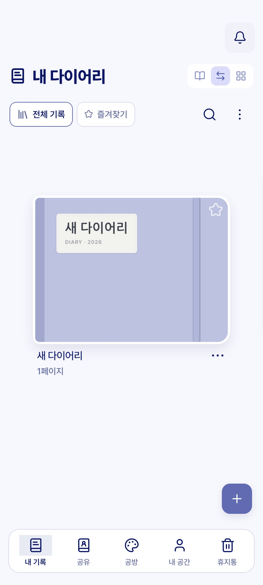
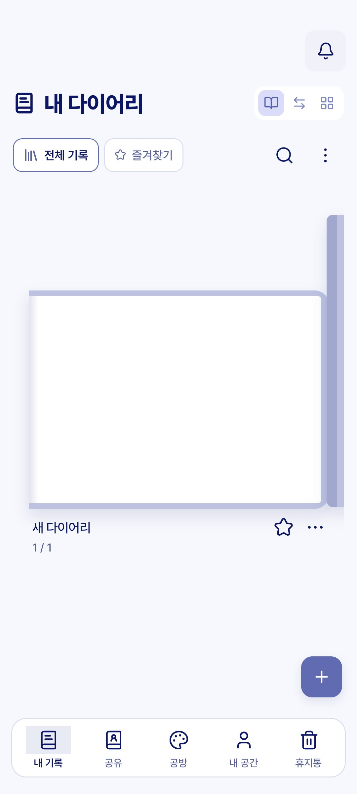
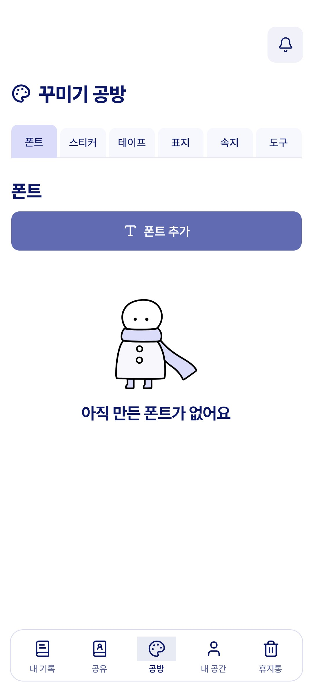
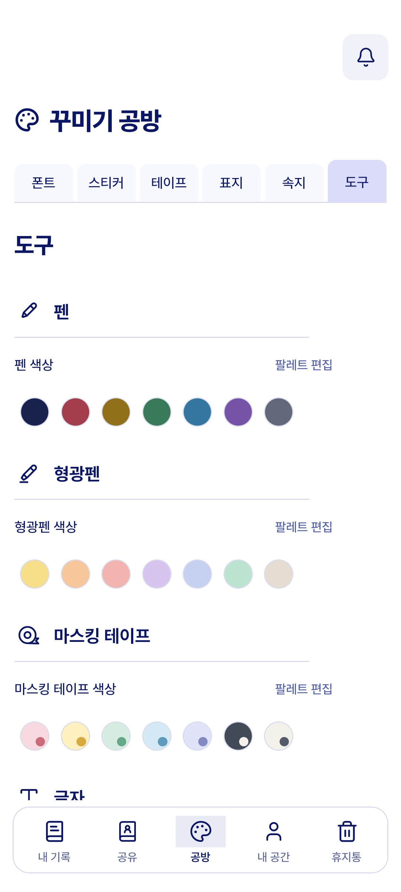
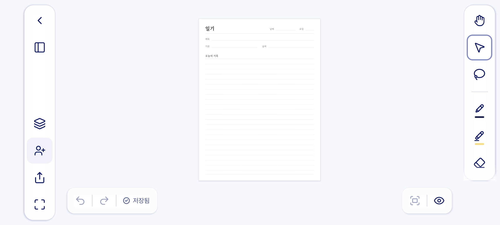
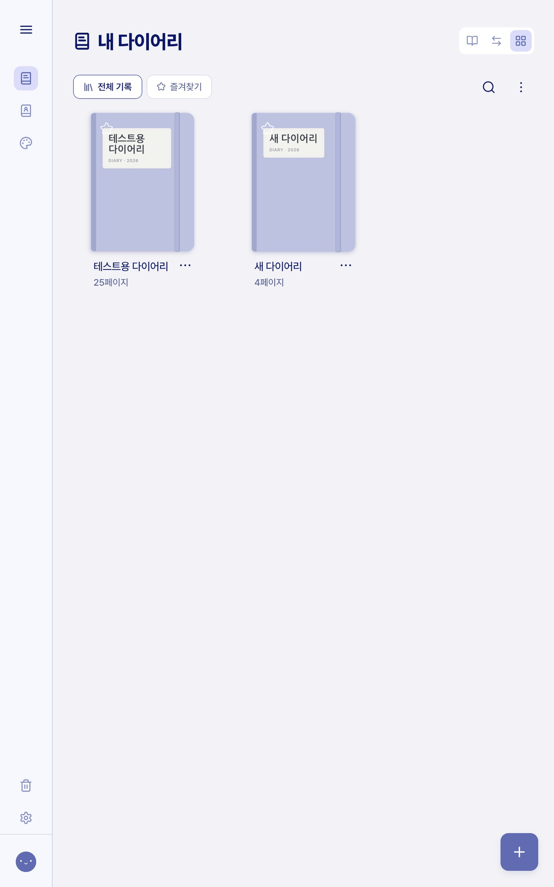
클로드가 함께 본 작은 어긋남 (판단이 아니라 측정 · 대조)
0(sharing/SharingEntry.js).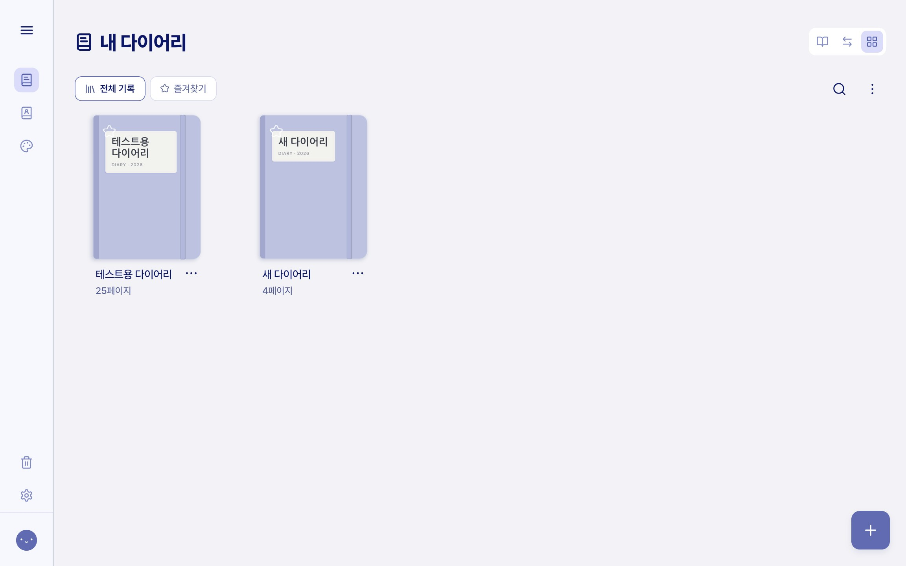
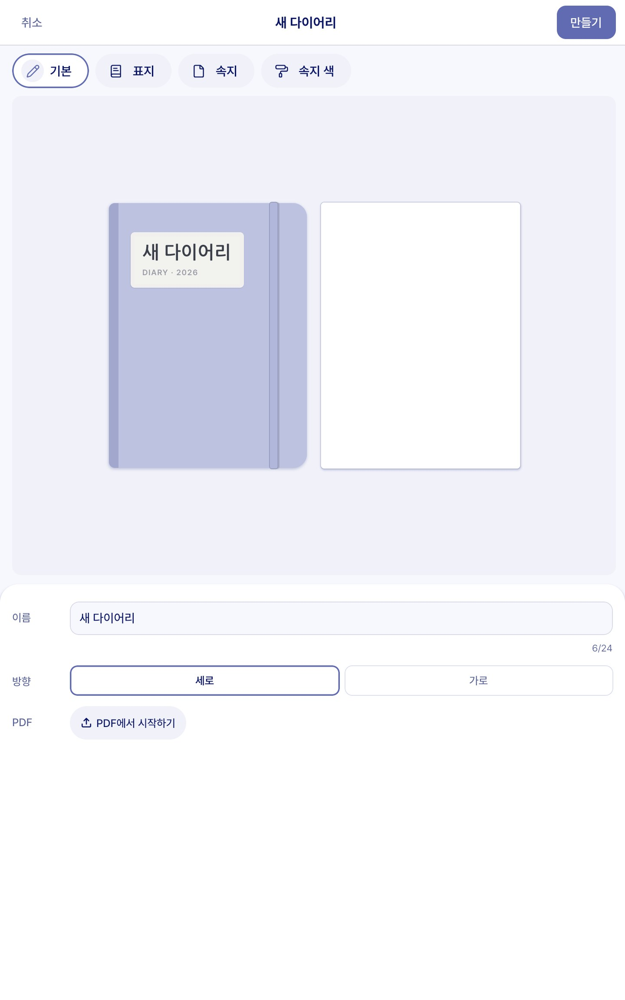
| 대상 | 어긋남 | 맞출 기준 |
|---|---|---|
| 도구 패널 | 폰 세로에 시트 + 떠 있는 옵션 패널 공존 | 폰 세로 = 시트 |
| 저장 방식 | 토글 즉시 저장 / 알림 설정은 저장 버튼 |
토글은 즉시, 글자 입력만 저장 |
| 나갈 때 확인 | 새 다이어리 · 프로필은 있음, 스티커 분리 · 로그아웃은 없음 | 작업 손실이 있으면 확인 |
| 확인창 | 대부분 앱 창, 스티커 재분리만 시스템 창(StickerSplitModal.js:169) |
DialogHost |
| 별 위치 | 표지 위 / 펼쳐서만 표지 밖 | 표지 위 |
| 전체 화면 머리 | 공방 · 설정: 제목만, 알림 설정 · 재설정: < + 선, 폰트: < + ⋯ |
하위 화면은 < 필수 |
| 로그인 묶음 | 로그인 · 가입은 카드, 재설정은 전체 화면 + 구석 버튼 | 같은 카드 |
| 말 | 내 공간/마이페이지, 받은 초대/알림, 내보내기(참여자)/내보내기(파일), 스티커 1개/폴더 0개 스티커 |
용어표 한 장 |
| 안내 멘트 (§8) | 필기에 사용한 색이 여기에 저장돼요., 로그인한 서버 다이어리에서 올린 사진을…, 개발 빌드에 모델 파일을 준비해 주세요.(모델 없는 빌드에서 사용자 노출, 운영 노출 여부 확인) |
가이드 §8 |
| 가이드 ↔ 코드 | 공유 창 알림 행, OO님이 초대했어요, 수락 후 바로 열기, 태블릿 패널 한쪽만 등 |
코드 또는 가이드 수정 |
특히 참여자 내보내기와 파일 내보내기는 같은 말이 전혀 다른 뜻이다. 참여자 쪽을 내보내기 → 참여 해제로 바꾸는 것을 권한다.
이 문서의 개선이 iOS에도 그대로 좋아지는 것 — F-01 · F-02(Keychain) · F-04 · F-05 · F-06 · F-07 · F-08 · F-10 · F-11 · F-12 · F-25 일부 · §4.2 빈 상태 · §5 미감 전부(공용 RN 코드).
| 주제 | iOS에서 따로 볼 것 | 근거 |
|---|---|---|
| 모달 닫기 | 스와이프 닫기를 막고 시도 시 확인 시트 (isModalInPresentation). 뒤로가기 키가 없어 F-06은 < 버튼 경로를 막아야 함 |
일반 지식, HIG 본문 미확인 |
| 세션 | SecureStore 값이 앱 삭제 뒤에도 남음(Android는 지워짐) → 재설치 첫 실행에서 초기화 | 조사 |
| 알림 권한 | 거부 후 재요청 불가, provisional 권한 활용 | Apple 문서 |
| 글자 크기 | Dynamic Type 확대 확인 (F-17) | 미확인 |
| 터치 | 44pt | 서드파티 수치 |
| 빌드 | 지난 보고서 P0(포인터 이벤트, requireFullScreen) 그대로. 현행 요건 Xcode 26 SDK, 연령 등급 재응답 | Apple 현행 페이지 |
| 폰트 | 폰트 생성은 Android 전용인데 게이트 후에야 알게 됨 | 코드 |
iOS 담당자 확인 순서: ① 로그인 유지 ② 초대 수락 후 도착 ③ 키보드 닫힌 뒤 위치(F-09) ④ <로 나갈 때 작업 소실 ⑤ Pencil 입력 ⑥ iPad 세로 패널(F-15).
경력 많은 PM이 이 앱을 볼 때 먼저 물을 질문들이다.
| 질문 | 지금 상태 | 권고 |
|---|---|---|
| 출시 후 무엇을 볼 것인가? | 분석 · 크래시 수집 패키지 없음(F-13). 전역 오류는 기기에만 저장 | 최소 이벤트 6개(가입, 다이어리 생성, 초대 발송, 초대 수락, 첫 기여, 재방문) + 크래시 수집 |
| 북극성 지표는? | 없음 | 제안: 주간 활성 공동 작성 다이어리 수. 퍼널의 급소는 수락 → 첫 기여인데 지금 그 사이가 끊겨 있다(F-04) |
| 핵심 가치가 먼저 보이나? | "하루 한 장 사진 + 함께"가 첫 화면에 없음. 사진은 도구 줄 11번째 | 서비스 문장과 첫 화면을 맞출지 결정 |
| 혼자 쓰는 사람을 어떻게 함께로 넘기나? | 유도 없음, 게이트는 벽처럼 읽힘 | 다이어리를 만든 뒤 자연스러운 공유 지점 설계 |
| 재방문 이유는? | 매일 기록 알림 토글은 있으나 서버 미연결. 받는 쪽 소식 알림 범위 불명 |
알림 설계 확정, "친구가 꾸몄어요"가 핵심 재방문 동기 |
| 미성년 · 안전 | 만 14세 미만 가입 차단 있음. 신고 · 차단 없음(F-01). 14~19세 사용자 간 초대 안전 정책 불명 | 연령 정책 · 신고 처리 책임자 · 응답 시간 정의. Play Age Signals · Apple Declared Age Range 검토(공식 문서 재확인 필요) |
| 미완성이 사용자에게 보이나? | 오리기 저장(F-12), 아이디 찾기, 알림 토글, 유료 안내(유료 이용은 준비 중) |
출시 범위 명단을 만들어 숨길 것 정리 |
| 코드엔 있는데 못 가는 것 | 영역 내보내기, 페이지 넓게 보기, 개인 사본, 카카오 로그인, 페이지 PDF 결과 화면 등 (01 화면 목록 §0) | 살릴지 지울지 결정. 특히 개인 사본은 F-05의 해법이 될 수 있음 |
| 고객 응대 경로 | 문의 이메일 복사만 있음 | 앱 안 문의 · 탈퇴 사유 · 신고 경로 |
| 요금제 | 정원 4명 + 유료 준비 중 문구 | 문구를 넣을 시점과 가격 실험 계획 |
| 데이터 책임 | 탈퇴 시 다른 사람과 함께 쓰던 다이어리 · 글 처리, 소유자 탈퇴 시 승계 규칙이 앱에 안 보임 | 정책 확정 후 탈퇴 창에 명시 |
| QA 재현성 | 시드 파일이 저장소에 없어 매번 계정을 새로 만듦 | 로컬 시드 샘플(계정 · 공유 다이어리)을 저장소에 추가 |
참고: 소셜 앱 잔존율 기준은 출처마다 크게 다르다(a16z 우수 D1 70% · D7 50% vs MWM 2025 Q3 미국 D1 31.9% · D7 12.3%). 정의를 먼저 맞춘 뒤 비교한다.
| # | 질문 | 권장 | 이유 |
|---|---|---|---|
| 1 | 폰 도구 줄을 7칸 + 더보기로 줄일까, 12칸 스크롤을 유지하고 페이드만 넣을까 | 사용 빈도 데이터가 없으니 페이드 먼저 | 구성 변경은 기본 설계 변경 |
| 2 | 하단 탭에서 휴지통을 뺄까 | 뺀다 | 탭 4개면 라벨 여유 |
| 3 | 공방 만들기 버튼 전폭 유지? | 코덱스 제안대로 축소 시안을 먼저 본다 | 가이드 규칙 변경 |
| 4 | 회원 다이어리의 속지 · 표지를 서버 저장으로 | 필수 (백엔드 협의) | F-07 · F-08 |
| 5 | 오리기 · 유료 안내 · 알림 토글을 출시에서 뺄까 | 뺀다 | 미완성 노출 |
| 6 | 신고 · 차단 범위 | 정책 담당과 먼저 합의 | F-01 |
| 7 | 첫 실행에 소개 · 첫 사진 유도를 넣을까 | 안내 멘트 금지 규칙과 함께 결정 | §12.1 |
| 8 | 필기를 선택 도구로도 잡을지, 올가미 전용인지 | 사용자 기대는 탭 선택 | §12.4 |
| 9 | 오프라인일 때 회원 다이어리를 읽기로 보여 줄 범위 | 로컬 캐시 범위와 함께 | §12.2 |
0 숨김, F-06 나가기 확인, F-05 문구 · 잠금, F-09 위치 복원, F-04 수락 후 열기, F-14 빌드 3건, F-03 고지 재생성.+ → 만들기 두 번이면 빈 페이지다. 스티커도 게스트에게 바로 열린다.최근 칸은 비면 제목만 있고 공백이다.다시 로그인해 주세요. + 다시 불러오기만 보여 준다. 서버 문제를 사용자 계정 문제로 안내한다. 만들기도 작업대 아래 같은 문구로 끝난다(입력 내용은 유지됨).다시 불러오기가 계속 실패한다. 내 공간은 로그인된 프로필을 보여 주고, 알림은 로그인이 필요해요…가 두 줄 중복이다. 로그인 버튼이 없어 로그아웃을 누른 뒤 다시 로그인하는 것이 유일한 길이다.확인하지 못한 이전 생성 요청이 있어요. 같은 요청으로 결과를 확인해 주세요. 내부 동작을 말하는 문구가 보관함 맨 위에 쌓인다.나중에로 넘긴 가져오기 창이 같은 세션에서 다시 떴다.로그인 서버 설정을 확인해 주세요.(503 서버 문구 그대로).다시 로그인 화면(이메일 채움)으로 보내고, 네트워크는 상단 띠 + 자동 재시도, 기기에 있는 내용은 읽기로 보여 준다. 지금은 NetInfo가 없다(F-02와 함께).응답 대기와 수락을 그대로 보여 준다. 프로필까지 입력하고 수락하고 참여하기를 눌러야 최대 4명까지 참여할 수 있어요.가 나온다. 입구에서 알린다(코드에 정원 가득 문구가 있으나 이 경로에서 안 나옴).이미 수락한 초대로 남는다.완료 · 참여 해제가 화면 밖으로 밀린다.저장됨으로 합쳐졌다. 충돌(409) 화면은 재현하지 못했다.다음 다이어리 불러오기가 목록 끝이 아니라 맨 위에 고정이고 자동으로 이어지지 않는다. 20권 뒤는 위로 올라가 눌러야 한다. 스크롤 끝 자동 불러오기로.+ 버튼이 오른쪽 카드의 ⋯를 가린다. 목록 끝 여백으로 해결.fonttest 앱 데이터에 시드 계정 로그인 흔적, 설정은 되돌림(자동 회전 켬, 글자 1.1 그대로).qa1~5@dio-local.test, QA용 다이어리, qa5의 대량 다이어리 60권. 언제든 지워도 된다.Test-A 다이어리 표지에 예전 기기 페어링 화면이 찍힌 사진이 있어, 그 표지가 보이는 캡처는 문서에서 뺐다.